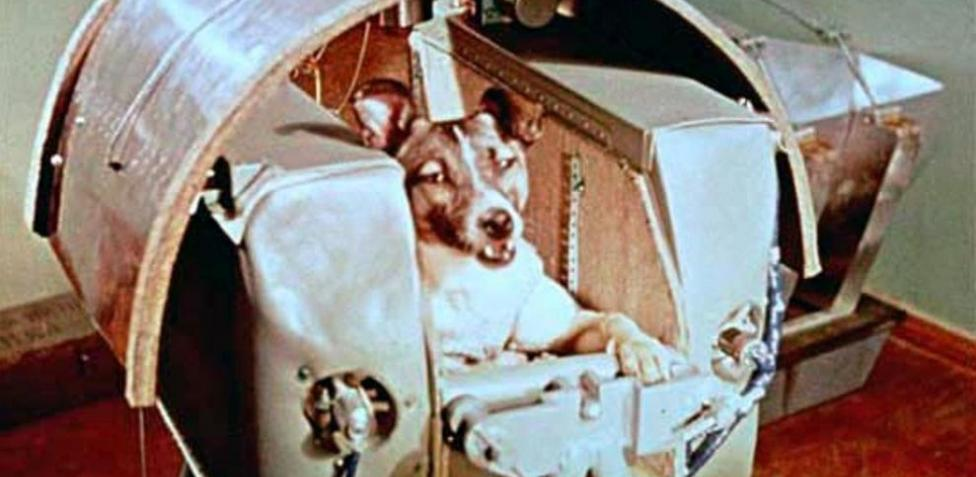
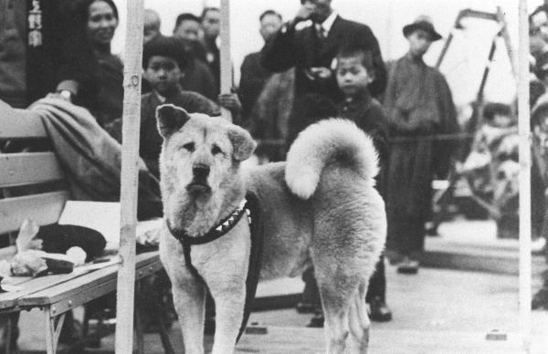
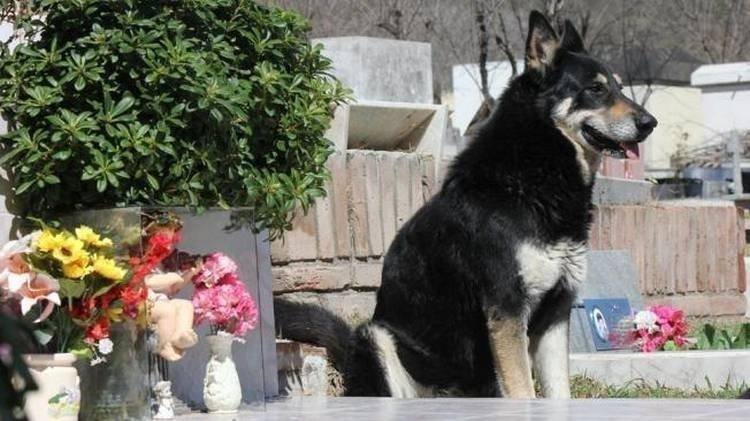
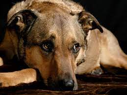

Historias
Laica
Laika (en ruso Лайка, ‘ladradora’; Moscú, Unión Soviética, 1954 - Sputnik 2, Órbita baja terrestre, 3 de noviembre de 1957) fue una perra espacial soviética que se convirtió en el primer ser vivo terrestre en orbitar la Tierra. Lo hizo a bordo de la nave soviética Sputnik 2, el 3 de noviembre de 1957, un mes después que el satélite Sputnik 1.
También fue el primer animal que murió en órbita. Como se sabía poco sobre los efectos que los vuelos espaciales podían producir sobre los seres vivos en el momento de la misión de Laika y, la tecnología suborbital no se había desarrollado todavía, no se tenía ninguna expectativa de que Laika sobreviviera. Algunos científicos creían que los humanos no podrían sobrevivir al lanzamiento o a las condiciones del espacio exterior, por eso los ingenieros de vuelo vieron los vuelos de animales como los precursores necesarios para las misiones humanas.
Laika, una perra callejera, originalmente llamada Kudryavka (Кудрявка, ‘pequeña de pelo rizado’), fue sometida a entrenamiento con otros dos perros, y finalmente fue elegida como la tripulante de la nave espacial soviética Sputnik 2, lanzada al espacio exterior el 3 de noviembre de 1957.
Laika murió horas después del lanzamiento por sobrecalentamiento, que probablemente fue ocasionado por un fallo del sustentador de la central R-7, que forma parte del sistema térmico de la nave, al separarse de la carga útil.
La verdadera causa y tiempo de su muerte no fue revelada sino hasta 2002; en cambio, fue ampliamente informado que había muerto al sexto día,4 se quedó sin oxígeno, o como el gobierno soviético alegó inicialmente, fue sometida a eutanasia antes del agotamiento del oxígeno.
El experimento demostró que es posible que un pasajero vivo sobreviva al ser puesto en órbita y soportar la microgravedad, allanando el camino para los vuelos espaciales humanos y proporcionando a los científicos algunos de los primeros datos sobre cómo los organismos vivos reaccionan a los entornos de los vuelos espaciales. Tras Laika, la URSS envió ocho perros más al espacio, de los cuales seis regresaron con vida a la Tierra.
Hachiko
Hachikō nació en una granja cerca de la ciudad de Ōdate, en la Prefectura de Akita1 A principios de 1924, fue encontrado por Hidesaburō Ueno, profesor del Departamento de Agricultura en la Universidad de Tokio, y a raíz de la muerte de una perra anterior, al principio no quiso adoptarlo ya que le causaba malos recuerdos, pero su hija adolescente insistió.
Hachikō fue enviado dentro de una caja desde la prefectura de Akita hasta la estación de Shibuya (un viaje de dos días en un vagón de equipaje). Cuando los sirvientes del profesor lo fueron a retirar, creyeron que el perro estaba muerto.
Sin embargo, cuando llegaron a la casa del profesor, este le acercó una fuente con leche al cachorro, y este se reanimó. El profesor lo recogió en su regazo y notó que las patas delanteras estaban levemente desviadas, por lo que decidió llamarlo Hachi (‘ocho’ en japonés), por la similitud con el kanji (letra japonesa) que sirve para representar al número ocho (八).
La hija del profesor dejó la casa de su padre tras quedar embarazada y casarse, para irse a vivir a la casa paterna de su esposo.
El profesor pensó en regalar a Hachi, pero pronto se encariñó con el perro, que lo adoraba enérgicamente. El perro acompañaba al Profesor a la estación para despedirse allí todos los días cuando su dueño iba al trabajo y, al final del día, volvía a la estación para recibirlo.
Esta rutina, que pasó a formar parte de la vida de ambos, no fue inadvertida ni por las personas que transitaban por el lugar ni por los dueños de los comercios de los alrededores. sta rutina continuó sin interrupciones hasta el 21 de mayo de 1925, cuando el profesor Ueno sufrió una hemorragia cerebral mientras daba sus clases en la Universidad de Tokio, y murió.
Esa tarde Hachikō corrió a la estación a esperar la llegada del tren de su amo, y no volvió esa noche a su casa. Se quedó a vivir en el mismo sitio frente a la estación durante los siguientes 9 años de su vida.
Conforme transcurría el tiempo, Hachikō comenzó a llamar la atención de propios y extraños en la estación; mucha gente que solía acudir con frecuencia a la estación había sido testigo de cómo Hachikō acompañaba cada día al profesor Ueno antes de su muerte. Fueron estas mismas personas las que cuidaron y alimentaron a Hachikō durante ese largo período.
Capitan
Capitán" murió en el cementerio de la ciudad cordobesa de Carlos Paz, después de casi 11 años de un ritual que consideraba impostergable: todos los días visitaba la tumba de su dueño. Se trata de un perro que se crió de cachorro con Miguel Guzmán, quien murió el 24 marzo de 2006. Al fallecer su mejor amigo, "Capitán" simplemente desapareció. La familia de Guzmán lo dio por perdido, pero seis meses después, cuando algunos de sus miembros visitaban el cementerio local, lo hallaron acostado ante la tumba de su antiguo dueño.
A partir de entonces, "Capitán" se quedó a vivir en el cementerio y cumplía su ritual de fidelidad a las 6 de la tarde en punto, recostado sobre la tumba de Guzmán. Así pasaron casi 11 años y su historia trascendió a su pueblo y pronto la mascota se convirtió en el perro más famoso y querido de Córdoba. Incluso la televisión francesa filmó un documental sobre su vida.
"Capitán" murió un domingo en el baño del cementerio. Tenía casi 16 años, estaba viejo y enfermo, apenas caminaba pero jamás dejó de ir a la tumba de Guzmán ni un solo día. Incluso estaba casi ciego, pero aún así no dejó de cuidar la última morada de su dueño.
Héctor Baccega, director del Cementerio municipal de Villa Carlos Paz, había contado tiempo atrás: “El perro apareció acá solo y dio vueltas por todo el cementerio, hasta que llegó también solo a la tumba de su dueño. No lo llevó nadie hasta ahí. Y eso no es todo: cada día, a las seis de la tarde, va y se acuesta frente a esa tumba”.
“Capitán recorre el cementerio conmigo todos los días. Pero cuando llega esa hora se va para el fondo, donde está la tumba de su amo. Este perro nos da una lección. Creo que los humanos tendríamos que apreciar más los recuerdos de los que se nos van. Los animales nos enseñan tanta fidelidad”, contó Baccega.
Nadie sabe cómo llegó hasta el cementerio la primera vez. Guzmán había fallecido en el hospital local y velado en una casa mortuoria lejana al cementerio, mientras "Capitán" lo esperaba en su casa. Los últimos tiempos fueron los más difíciles. El perro sufría de una insuficiencia renal y apenas podía caminar y ver. Por ello recibía una alimentación especial gracias a la Fundación Proteccionista de Animales (FUPA)
"El perro tenía una insuficiencia renal que arrastrabas desde hacía 4 años y por la cual recibía una alimentación especial que le deba la gente de FUPA. Lamentablemente su edad y esta condición, hicieron que no pueda resistir, podríamos haberlo internado, pero era para que muera en la veterinaria, así que preferimos dejarlo y atenderlo en el cementerio, donde él vivía y se sentía tranquilo", dijo el veterinario Cristhian Stempels
Canelo
La historia de Canelo el perro de Cádiz transcurre a fines de la década de los años 80. Canelo y su amo eran seres comunes para la sociedad aunque especiales para ellos. Canelo vivía en Cádiz, España, y seguía a su dueño para todas partes, no lo dejaba ni a sol ni a sombra. Su amo vivía solo con él y no tenía más amigos que su leal compañero Canelo. Eran unidos y se adoraban, eran compinches en todo, eran amigos inseparables.
todas las caminatas que hacían por la ciudad, una vez por semana iban hasta el Hospital Puerta delMar. Canelo esperaba a su dueño en la puerta del hospital hasta que saliera dado que no podían entraranimales. El hombre salía de su tratamiento y ambos caminaban a su casa. Esto se repetía semanalmentey desde hacía ya un largo tiempo porque el dueño de Canelo iba a tratarse un persistente problema renalsometiéndose a tratamientos de diálisis.
su amigo para volver a casa. Los vecinos de la zona sedieron cuenta de que algo había pasado con el hombre alque Canelo acompañaba y se apiadaron del fiel perro. Entre todos se organizaron para alimentarlo y llevarlecobijas y agua.
En una oportunidad, la perrerase llevó a Canelo parasacrificarlo, pero los vecinos que lo cuidaban intercedieron para que no lohicieran; así le salvaron la vida. Ni el frío ni el calor pudieron sacar de la puertadel hospital a Canelo que sólo quería reencontrarse con su dueño y amigo, comocada vez que entraba por esa puerta y volver a su hogar como siempre, caminando juntos.
En una oportunidad, la perrerase llevó a Canelo parasacrificarlo, pero los vecinos que lo cuidaban intercedieron para que no lohicieran; así le salvaron la vida. Ni el frío ni el calor pudieron sacar de la puertadel hospital a Canelo que sólo quería reencontrarse con su dueño y amigo, comocada vez que entraba por esa puerta y volver a su hogar como siempre, caminando juntos.
años fue el tiempo que el noble Canelo, el perro de Cádiz esperó fuera del hospital la salida de suamo. Jamás se fue, no se cansó, ni se fue con una nueva familia. Su único amigo había entrado por esapuerta y él tan solo esperaba que saliera para volver juntos a casa.
Un final trágico y triste aunque nos da ejemplo de vida, denobleza y lealtad. Quienes amamos a los animales, sabemos de lanobleza de estos seres tan especiales que nos acompañan a lolargo de su vida con la sola intención de recibir nuestra atencióny cariño día tras día. La historia de Canelo fue tan conocida en Cádiz que el pueblo enreconocimiento al cariño, dedicación y lealtad de Canelo , puso sunombre a un callejón y una placa en su honor y memoria.